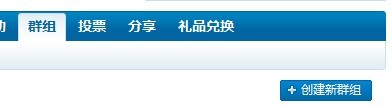
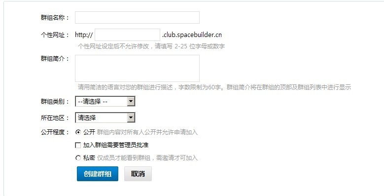
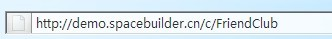

社区/街道是具有相同爱好的用户进行分享和交流的空间；它是一个小组或者组织，由用户发起的，其他用户可以参加进来。
1 社区/街道成员可以将自己喜爱的日志，图片，文件和网摘推荐到他所参加的社区/街道中跟其他社区/街道成员一起分享；
2 可以在社区/街道中发起话题展开讨论。
公开的社区/街道所有用户都可以查看并参与进来；
私密的社区/街道，非社区/街道成员不能查看社区/街道内容并且只有收到社区/街道邀请的用户才能参加社区/街道。
首先，只有站点用户才能创建社区/街道。
1 打开站点后进入社区/街道频道，右侧有个“创建新社区/街道”按钮，点击即可进入创建社区/街道页面。

点击即可进入创建社区/街道页面：

（1） 其中的“个性网址”是指，在浏览器地址栏里的显示：

（2） 社区/街道类型 例如是“娱乐美食”的还是“软件编程”。
（3）所属地区：如果创建的社区/街道地区性质比较强，可以选择社区/街道的地区